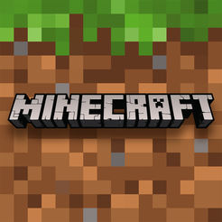

Мои увлечения:
- 
Новости Minecraft
-
Недавно разработчики выпустили новое обновление. Встречайте, снапшот 18w11a!
Здесь вы встретите: затонувшие корабли с сокровищами, новый моб - утопленник, изменения связанные с кораллами, а также возможность скопировать в буфер обмена текущие координаты, нажав F3+C.
-
Вышел снапшот 18w06a.
Из нововведений: Возвращение команды /enchant Добавление книги рецептов для печек
-
Новые баги на снапшоте 18w01a
Похоже, разработчики сломали преобразование TextComponent в String, однако больший интерес составляют причины, привёдшие к тому, что эта ситуация возникла.
-
LadyAgnes опубликовала скриншот в своём твиттере. Судя по всему, это яйца черепахи.
Новости аниме
-
Трейлер грядущей игры My Hero Academia: One's Justice
На официальном YouTube канале Bandai Namco Entertainment был показан трейлер игры My Hero Academia: One's Justice, которая выйдет в 2018 году.
-
Появился тизер 3 сезона аниме Sword Art Online
На официальном сайте аниме Мастера меча онлайн (Sword Art Online) появился тизер раскрывающий точную дату выхода 3 сезона. Выход 3 сезона состоится в октябре 2018 года.
-
В этом году выйдет аниме Убийца Гоблинов (Goblin Slayer)
Появился трейлер аниме Убийца Гоблинов (Goblin Slayer), премьера которого состоится в 2018 году. Точная дата пока неизвестна.
-
Тизер нового проекта по аниме Psycho-Pass
Во время телевизионного мероприятия Plus Ultra Fuji TV Anime Lineup Presentation 2018 японского телеканала Fuji был показан тизер нового проекта по аниме Психопаспорт (Psycho-Pass).